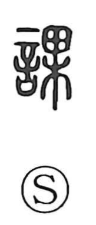

課

Uncategorized
Kun: kasu | On: ka
section ・ lesson ・ assignment ・ to assign ・ to test
Explanation
課 is a phono-semantic character: 言 (speech) provides the sphere of words and discourse, while 果 marks the on reading ka and contributes an image drawn from fruit—things gathered in one place yet internally divided into segments. Many graphs with 果 as their phonetic (such as 夥, 窠, 顆) share this sense of clustered units. Applied to language, 課 first suggested dividing text into discrete sections, and then the practice of allocating or imposing responsibility for each part. From this flow its familiar meanings: a section or lesson, an assignment or work to be done, and the act of assigning or trying a task.